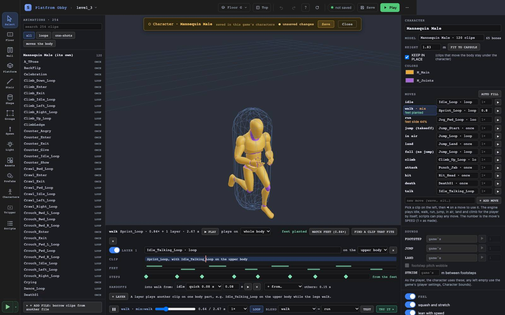
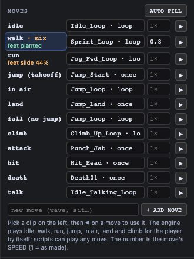
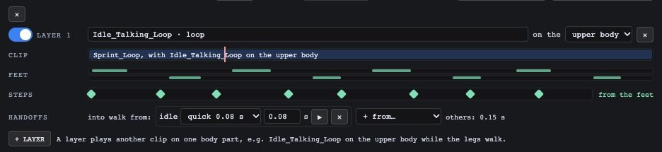
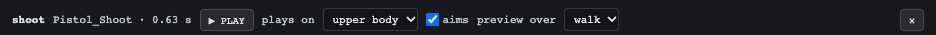
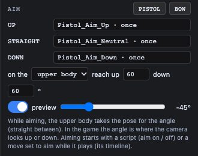
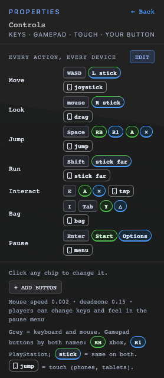
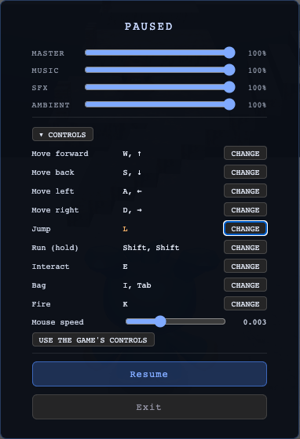

How the last few phases fit together, as one example: a mannequin that walks and runs with planted feet, steps on its footfalls, shoots while running, aims where you look, and does it all from a mouse click or a trigger pull. No scripts needed until you want extras.
The character is the hub: everything about how it moves and looks lives there, so the same character works as the player, a placed character or an enemy. The game keeps how the player plays (speed, jump height, camera). Controls only say which button plays which move.
A model with a skeleton (Mannequin F, or the male one inside UAL1) and files full of clips with the same skeleton (UAL1, UAL2: 254 clips). Done already for your obby.

Sprint_Loop at 0.84×) or MATCH FEET.

shoot → clip Pistol_Shoot → its timeline

Press PISTOL: up / straight / down fill from Pistol_Aim_*. Drag the preview slider to check. (No aim clips? The spine turns instead.)

Save the character.
Pick the character (or USE AS PLAYER in the Characters panel). Move speed, jump height, camera stay the game's; model, moves, sounds and feel come from the character.
shoot.
New games start with Fire (plays attack) and Aim already there; your obby predates that, so add them once.
Hold Aim and click Fire: the character shoots where the camera looks, while running.
Fire → play a sound, adjust number ammo −1, only if ammo > 0. "while it's held" repeats (charge shots). The button's built-in move and the script both run.
Click the game view first so keys go to the game. Players can change their own keys and mouse speed in the pause menu (Esc / Enter).

| You want… | It's on |
|---|---|
| a clip for a move, its speed, its footsteps, blend times | the character editor → click the move → timeline |
| two clips at once (talk while walking) | the move's timeline → + LAYER |
| an action over running (shoot, wave) | the move's timeline → plays on |
| aiming up and down | the character editor → AIM |
| footstep / jump sounds, squash and lean | the character editor → SOUNDS, FEEL |
| how fast the player runs, jump height, camera | spawn point → Movement, Camera |
| which key does what, your own buttons, touch layout | main menu → Controls |
| anything beyond "play a move" or "aim" | Scripts → when the player presses a button |